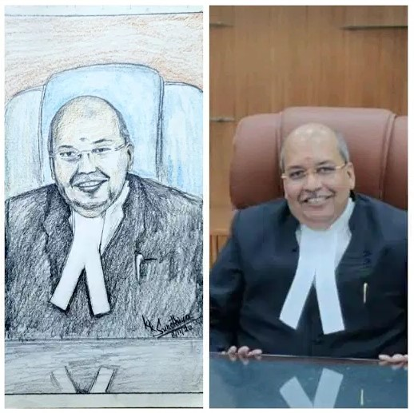
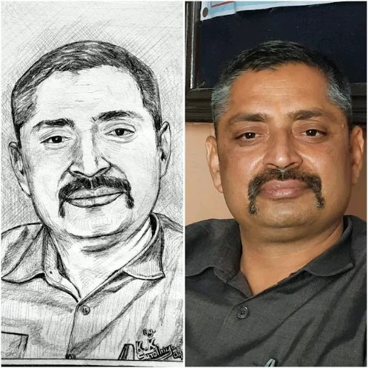
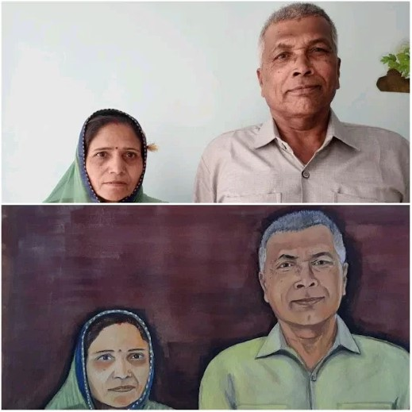
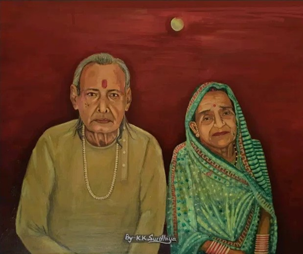
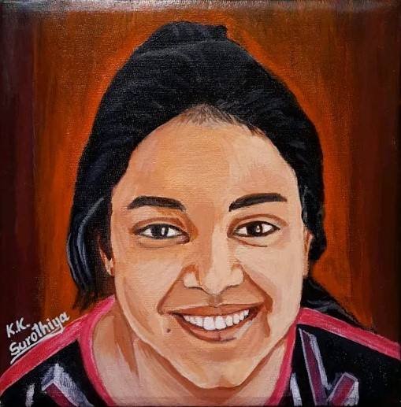
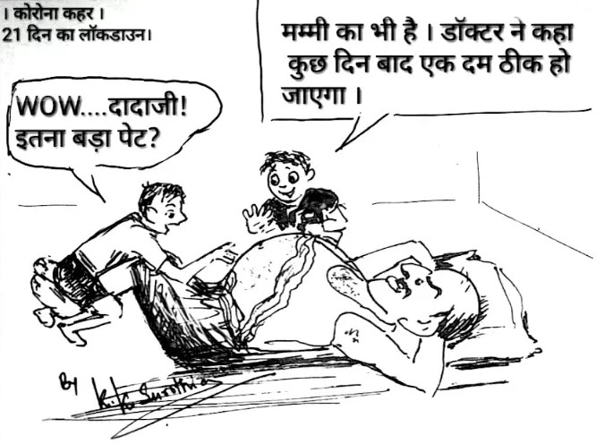
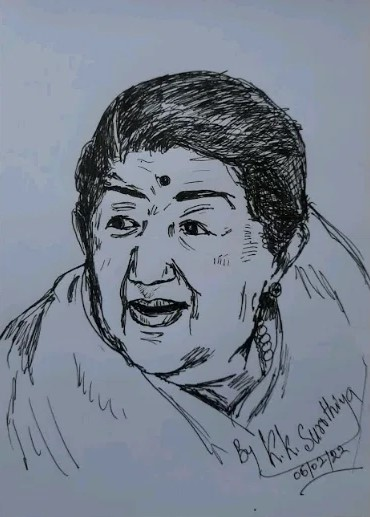
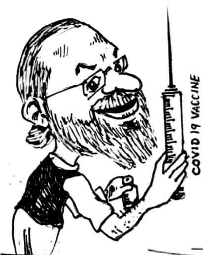
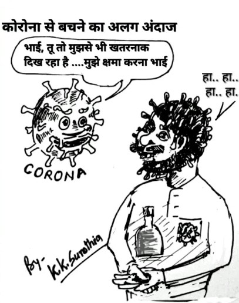

New Invention - Surothiya Veena

A portable Veena designed by Mr. Krishna Kumar Surothiya. The name of instrument is given as SUROTHIYA VEENA. It is portable and small in size hence easy to carry. It is unique and beautifully designed. It is played using a slide tone bar (a small steel rod). It sounds very sweet and effective. It is very useful for classical and light music. It is Patented by Government of India.
Books
व्यंग्य-वार्तालाप: कार्टून्स

वर्तमान समय में जो घटित हो रहा है या जो हो चुका है, लोग उसकी फ़िल्म या कार्टून का चित्रण देखने के लिए ज्यादा इच्छुक होते हैं “व्यंग्य-वार्तालाप” एक ऐसी ही पुस्तक है जो हास्य-व्यंग्य से ओतप्रोत है इस पुस्तक के दो भाग हैं एक आवासीय विद्यालय और दूसरा सामाजिक व राजनैतिक परिवेश प्रथम भाग में विशेषकर विद्यालय परिवेश में होने वाली घटनाओं का व्यंगात्मक चित्रण किया है, दूसरे भाग में सामाजिक घटनाओं, विशेषकर “कोरोना” (कोविड-19) महामारी व राजनीतिक घटनाओं पर कटाक्ष है आज के इस कठिन समय में यह पुस्तक लोगों के मन को गुदगुदाएगी और उनके चेहरों पर एक मुस्कान अवश्य लाएगी
मन की रेखाएं

गीत गाये भाव छाये
शब्द चुन-चुन गुनगुनाये ।
'मन की रेखाएँ' खिचीं तब
चित्र मन के उभर आये ।
संगीत सिर्फ मनोरंजन का साधन ही नहीं अपितु यह व्यक्ति की कल्पनाशीलता, संवेदनशीलता व रचनात्मकता को भी बढ़ाता है। संगीत से मुझे साहित्य का परिचय हुआ। जब व्यक्ति साहित्य से जुड़ता है तब उसका मन सागर की लहरों की तरह हिलोरे मारने लगता है। मेरा अन्तर्मन मन भी, संगीत की उड़ान भरता हुआ आसमान की ऊँचाइयों को छूने को आतुर सागर की लहरों के साथ बहते हुये उसकी गहराई का एहसास करते हुये, साहित्य रूपी हिलोरें मारने लगा। उसी का सुफल है यह कृति 'मन की रेखाएँ ।
Youtube Content
Art Work
    
  
Popular Shorts
Our Founder